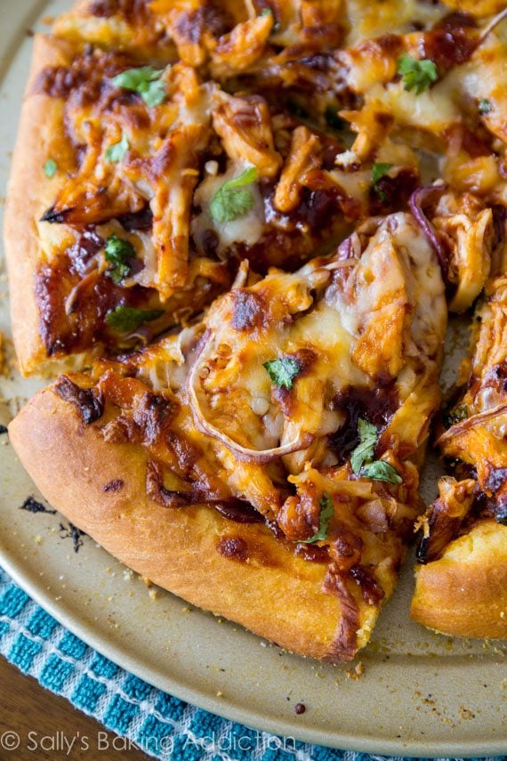

BBQ Pizza

Description
This is a recipe for classic BBQ chicken pizza with tangy BBQ sauce, chicken, and
red onion. Gouda cheese gives the homemade pizza the most delicious smoky flavor and cilantro adds a touch
of freshness. My pizza dough recipe makes enough for two 12-inch pizzas, so you can freeze half for later.
It’s an easy thick-style pizza crust with unbeatable flavor.
Though store-bought crust is convenient, I suggest using homemade pizza dough for the BEST flavor.
You could also use these toppings on whole wheat pizza dough instead. The bake time is exactly the same.
Homemade pizza crust is so much easier than you think.
Ingredients
- 250g wholemeal flour, plus a little for kneading if necessary
- 1 tsp instant yeast
- ¼ tsp salt
- 1 tbsp rapeseed oil, plus extra for greasing
- pack of 3 peppers
- 1 large onion
- 1 tbsp rapeseed oil
- 1 tsp fennel seeds
- 2 tbsp barbecue sauce
- 2 tbsp tomato purée
- 1 large skinless chicken breast fillet (about 225g), diced
- 175g baby plum tomatoes, quartered
- 50g Applewood smoked cheese, grated
Steps
-
Heat oven to 220C/200C fan/gas 7. Tip the flour into a mixer with a dough hook, or a bowl. Add the
yeast, salt, oil and 200ml warm water then mix well to a very soft dough. Knead in the food mixer for
about 5 mins, but if making this by hand, tip onto a work surface and knead for about 10 mins. The dough
is sticky, but try not to add too much extra flour. Leave in the bowl and cover with a tea towel while
you halve and slice the peppers and onions. There is no need to prove the dough for a specific
time, just let it sit while you make the topping.
-
For the topping: toss the peppers and onions with the oil and fennel seeds then roast for 15 mins.
Meanwhile mix the barbecue sauce and tomato purée with 5 tbsp water.
-
Take the dough from the bowl and press into the base and up the sides of an oiled 25x35cm Swiss roll
tin. Don’t knead the dough first otherwise it will be too elastic and will keep shrinking back. Spread
with two thirds of the barbecue sauce mix then add the remainder to the chicken and toss well to coat
it.
-
Take the roasted pepper mixture from the oven and spread on top of the pizza. Scatter over the tomatoes
then evenly spoon on the barbecue chicken. Scatter with the cheese and bake for 15 mins. Serve with a
salad or healthy coleslaw.